Statistical Methods
This page shows examples of hypothesis testing, bootstrapping, and time series analysis that I implemented in Python and R.
The Problem
Peter and Rosemary Grant are a british couple who have published a dataset reporting on the bird species found in Daphne Major from 1975 to 2012. The site is near the Galápagos Islands where Charles Darwin developed his theory of natural selection. In particular, we are interested in the Geospiza Scandens species. My task was to conduct a statistical analysis of the finches, focusing on the shape of their beaks as this is a simple way to characterise the birds.
The Solution
First, I import the relevant datasets.
import pandas as pd, numpy as np, matplotlib.pyplot as plt d1975 = pd.read_csv('C:/Users/user/Downloads/finch_beaks_1975.csv') d2012 = pd.read_csv('C:/Users/user/Downloads/finch_beaks_2012.csv') d1975.columns = ['band', 'species', 'beak length', 'beak depth'] d2012.columns = ['band', 'species', 'beak length', 'beak depth'] d1975.head() d2012.head()
band species beak length beak depth
0 2 fortis 9.4 8.0
1 9 fortis 9.2 8.3
2 12 fortis 9.5 7.5
3 15 fortis 9.5 8.0
4 305 fortis 11.5 9.9
band species beak length beak depth
0 19022 fortis 10.0 8.5
1 19028 fortis 12.5 8.9
2 19032 fortis 9.3 7.5
3 19041 fortis 10.3 9.6
4 19044 fortis 11.0 9.2
Next, I plot the empirical cumulative distribution functions for beak depth in 1975 and 2012.
def ecdf(data, label): x = np.sort(data) y = np.arange(1, len(x)+1) / len(x) _ = plt.plot(x, y, marker='.', linestyle='none') _ = plt.xlabel('value') _ = plt.ylabel('ECDF') _ = plt.legend(label, loc=0) plt.margins(.02) return ecdf(d1975['beak depth'], ['1975', '2012']) ecdf(d2012['beak depth'], ['1975', '2012'])

The ECDFs are close together as one would expect. I now generate bootstrap replicates of the difference in means between the two sets of data and plot a 95% confidence interval.
def draw_bootstrap_replicates(data, func, num): return np.array([func(np.random.choice(data, len(data))) for i in range(num)]) bs_mean_d1975 = draw_bootstrap_replicates(d1975['beak depth'], np.mean, 10000) bs_mean_d2012 = draw_bootstrap_replicates(d2012['beak depth'], np.mean, 10000) bs_mean_diffe = bs_mean_d1975 - bs_mean_d2012 conf_interval = np.percentile(bs_mean_diffe, [0 + 2.5, 100 - 2.5]) plt.hist(bs_mean_diffe, 'auto') plt.axvline(x=conf_interval[0], c='red') plt.axvline(x=conf_interval[1], c='red') plt.title('95% confidence interval of difference in means')
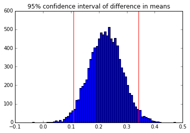
It is clear that the scandens beaks have gotten deeper. I want to set this result out formally in the form of a Hypothesis test.
The Null Hypothesis is that the means in 1975 and 2012 are equal.
I shift the data sets so that they have the same mean and then use bootstrap sampling to compute the difference of means. The resulting p-value falls below the conventional 0.05 threshold so the observation would have a very low probability under the null hypothesis.
The null hypothesis must therefore be rejected.
dconcat = d1975['beak depth'].append(d2012['beak depth']) dd1975 = (lambda x: x - d1975['beak depth'].mean() + dconcat.mean())(d1975['beak depth']) dd2012 = (lambda x: x - d2012['beak depth'].mean() + dconcat.mean())(d2012['beak depth']) dd1975means = draw_bootstrap_replicates(dd1975, np.mean, 10000) dd2012means = draw_bootstrap_replicates(dd2012, np.mean, 10000) ddiff = dd1975means - dd2012means diff = d1975['beak depth'].mean() - d2012['beak depth'].mean() pval = sum(ddiff[ddiff >= diff]) / len(ddiff) plt.hist(ddiff, normed=True, bins='auto') plt.axvline(x=diff, c='red') plt.title('p-value = %s' % str(pval))
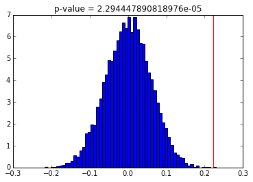
Now, we compare the ratio of beak length to beak depth so as to gain better capture beak shape.
ratio1975 = d1975['beak length'] / d1975['beak depth'] ratio2012 = d2012['beak length'] / d2012['beak depth'] diffmeanr = ratio1975.mean() - ratio2012.mean() mean1975r = draw_bootstrap_replicates(ratio1975, np.mean, 10000) mean2012r = draw_bootstrap_replicates(ratio2012, np.mean, 10000) plt.hist(mean1975r, 'auto') plt.hist(mean2012r, 'auto') plt.legend(['1975', '2012']) plt.title('99% confidence intervals for beak length to depth ratio') cfint1975 = np.percentile(mean1975r, [0 + .05, 100 - .05]) cfint2012 = np.percentile(mean2012r, [0 + .05, 100 - .05]) for line in np.concatenate((cfint1975, cfint2012)): plt.axvline(x=line, color='red')
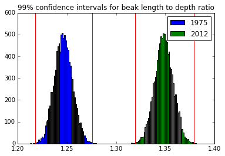
The 99% confidence intervals fall so far apart that it is unneccessary to compute p-values. There is a clear difference in beak shape from 1975 to 2012.
Finally, we want to look at heredity by comparing the average beak shape of the parents to that of the offspring in both the fortis and the scandens species.
fortis = pd.read_csv('C:/Users/user/Downloads/fortis_beak_depth_heredity.csv') scandens = pd.read_csv('C:/Users/user/Downloads/scandens_beak_depth_heredity.csv') fortis['parent'] = (fortis['Male BD'] + fortis['Female BD']) / 2.0 fortis.columns = ['offspring', 'male', 'female', 'parent'] fortis = fortis[['offspring', 'parent']] scandens.columns = ['parent', 'offspring'] plt.scatter(fortis['parent'], fortis['offspring'], alpha=0.5, c='red',marker='o') plt.scatter(scandens['parent'], scandens['offspring'], alpha=0.5, c='blue', marker='o') plt.xlabel('parent (mm)') plt.ylabel('offspring (mm)') plt.title('mean beak depth: parent vs offspring') plt.legend(['fortis', 'scandens'], loc=4)
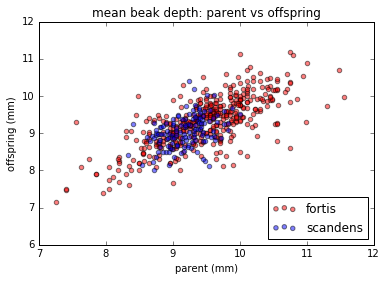
I chose the covariance of the parents and offspring divided by the variance of the parents as a metric for heritibility.
def draw_bs_pairs(x, y, func, size=1): output = [] for i in range(size): ind = np.arange(len(x)) bs_inds = np.random.choice(ind, len(ind)) bs_x = x[bs_inds] bs_y = y[bs_inds] output.append(func(bs_x, bs_y)) return output def heritability(x, y): return np.cov(x, y)[1][0] / np.cov(x, y)[1][1] fortis_heritability = heritability(fortis['offspring'], fortis['parent']) scandens_heritability = heritability(scandens['offspring'], scandens['parent']) fortis_bs = draw_bs_pairs(fortis['parent'], fortis['offspring'], heritability, size = 1000) scandens_bs = draw_bs_pairs(scandens['parent'], scandens['offspring'], heritability, size = 1000) cfint0 = np.percentile(fortis_bs, [0 + 2.5, 100 - 2.5]) cfint1 = np.percentile(scandens_bs, [0 + 2.5, 100 - 2.5]) plt.hist(fortis_bs, 'auto') plt.hist(scandens_bs, 'auto') plt.title('95% confidence intervals of heritability') plt.legend(['fortis', 'scandens'], loc=0) for line in np.concatenate((cfint0, cfint1)): plt.axvline(x=line, color='red')
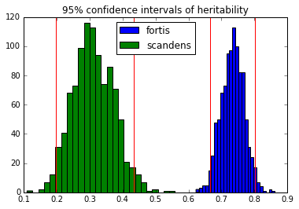
The heritability of beak depth in the scandens species seems low compared to the computed heritability. It could be that this observed heritability was just achieved by chance and beak depth is not really heritable in the species. I test this hypothesis by conducting a pairs permutation test.
scandens_heritability = heritability(scandens['offspring'], scandens['parent']) replicates = [] for i in range(10000): replicates.append(heritability(scandens['offspring'], np.random.permutation(scandens['parent']))) pval = len([i for i in replicates if i > scandens_heritability]) / float(len(replicates)) plt.hist(replicates, 'auto') plt.axvline(x=scandens_heritability, color='red') plt.title('p-value = %s' % pval) plt.xlabel('heritability')
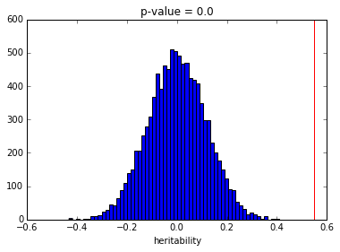
The p-value of 0 indeed indicates that beak depth is not heritable in the scandens species. Thus, the difference in beak shape must have been attained through a causal mechanism other than heritability. This naturally paves the way for natural selection.
The Problem:
This task required me to forecast time series data found on GitHub. The solution is implemented in R.
The Solution:
First, I load the dataset and explore it.
milk <- read.csv('C:/Users/user/Downloads/milk-data.csv')
head(milk)
Month Monthly.milk.production..pounds.per.cow
1 1962-01 589
2 1962-02 561
3 1962-03 640
4 1962-04 656
5 1962-05 727
6 1962-06 697
Milk <- milk$Monthly.milk.production..pounds.per.cow
plot(Milk, main="Monthly milk production",
xlab="time", ylab="pounds per cow",
type="l", col="blue")
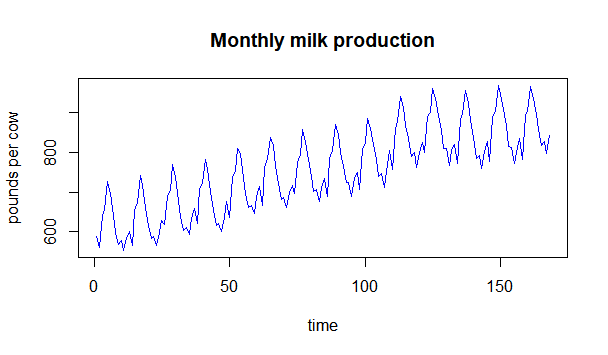
The data exhibits a distinct seasonal pattern. Thus, it will require seasonal differencing before it can be fit to a SARIMA (seasonal autoregressive integrated moving average) model.
library(astsa)
plot(Milk, type="l")
data <- diff(diff(Milk), 12)
plot(data, type="l")
acf2(data, 50)
The differenced data should be stationary. There are two outliers in the plot which do not conform to this standard but I chose to ignore these, as advised by the lecturer.
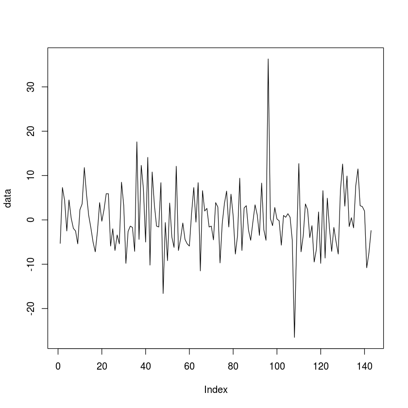There are significant spikes in the ACF at lag 12, 24, and 36.
There are significant spikes in the PACF at lag 12 and 24.
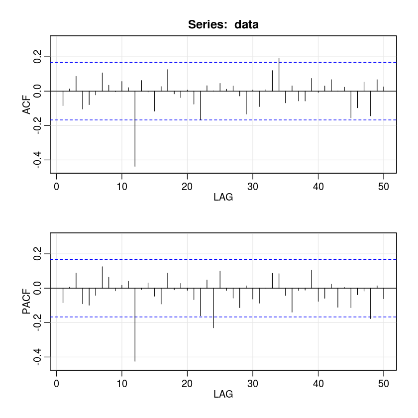The agreed upon parsimony principle required that the parameters of the SARIMA model sum up to six.
d=1; DD=1; period=12 for(p in 1:1){ for(q in 1:1){ for(i in 1:3){ for(j in 1:4){ if(p+d+q+i+DD+j<=10){ model<-arima(x=Milk, order = c((p-1),d,(q-1)), seasonal = list(order=c((i-1),DD,(j-1)), period=period)) pval<-Box.test(model$residuals, lag=log(length(model$residuals))) sse<-sum(model$residuals^2) cat(p-1,d,q-1,i-1,DD,j-1,'period=', period, 'AIC=', model$aic, ' SSE=',sse,' p-VALUE=', pval$p.value,'\n') } } } } }
0 1 0 0 1 0 period= 12 AIC= 968.3966 SSE= 7213.013 p-VALUE= 0.4393367 0 1 0 0 1 1 period= 12 AIC= 923.3288 SSE= 4933.349 p-VALUE= 0.6493728 0 1 0 0 1 2 period= 12 AIC= 925.3072 SSE= 4931.398 p-VALUE= 0.6529998 0 1 0 0 1 3 period= 12 AIC= 927.2329 SSE= 4925.911 p-VALUE= 0.6640233 0 1 0 1 1 0 period= 12 AIC= 938.6402 SSE= 5668.197 p-VALUE= 0.493531 0 1 0 1 1 1 period= 12 AIC= 925.3063 SSE= 4931.428 p-VALUE= 0.6531856 0 1 0 1 1 2 period= 12 AIC= 927.3036 SSE= 4931.134 p-VALUE= 0.6537711 0 1 0 1 1 3 period= 12 AIC= 929.2146 SSE= 4924.748 p-VALUE= 0.6627108 0 1 0 2 1 0 period= 12 AIC= 932.6438 SSE= 5308.014 p-VALUE= 0.6004813 0 1 0 2 1 1 period= 12 AIC= 927.2797 SSE= 4929.733 p-VALUE= 0.657349 0 1 0 2 1 2 period= 12 AIC= 926.8053 SSE= 4618.499 p-VALUE= 0.6826743
The parameter choice of 0 1 0 1 1 yields the smallest AIC value therefore our model is SARIMA(0,1,0,1,1)12
sarima(Milk, 0,1,0,0,1,1,12)
initial value 2.187412 iter 2 value 2.041962 iter 3 value 2.026713 iter 4 value 2.023363 iter 5 value 2.020977 iter 6 value 2.020123 iter 7 value 2.020102 iter 7 value 2.020102 final value 2.020102 converged initial value 2.027140 iter 2 value 2.027140 iter 3 value 2.027140 iter 3 value 2.027140 iter 3 value 2.027140 final value 2.027140 converged $fit Call: stats::arima(x = xdata, order = c(p, d, q), seasonal = list(order = c(P, D, Q), period = S), include.mean = !no.constant, optim.control = list(trace = trc, REPORT = 1, reltol = tol)) Coefficients: sma1 -0.6110 s.e. 0.0622 sigma^2 estimated as 55.6: log likelihood = -534.14, aic = 1072.28 $degrees_of_freedom [1] 154 $ttable Estimate SE t.value p.value sma1 -0.611 0.0622 -9.8265 0 $AIC [1] 5.03001 $AICc [1] 5.042348 $BIC [1] 4.048605
The p-value of 0 indicates that the result is significant and residual analysis verifies this. There are outliers present but I chose to ignore these.
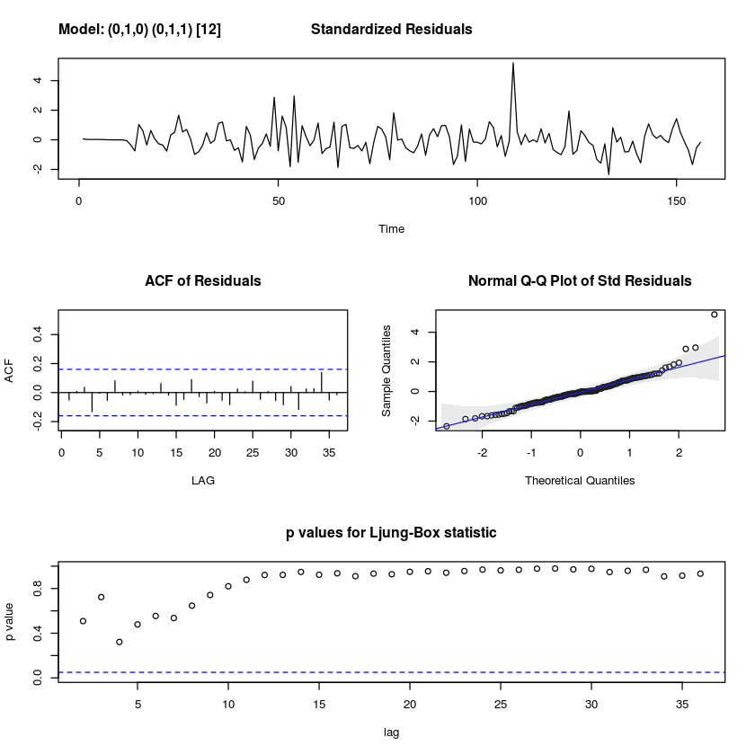
I can now conduct a time series forecast of two seasons.
model<- arima(x=Milk, order = c(0,1,0), seasonal = list(order=c(0,1,1), period=12)) plot(forecast(model))
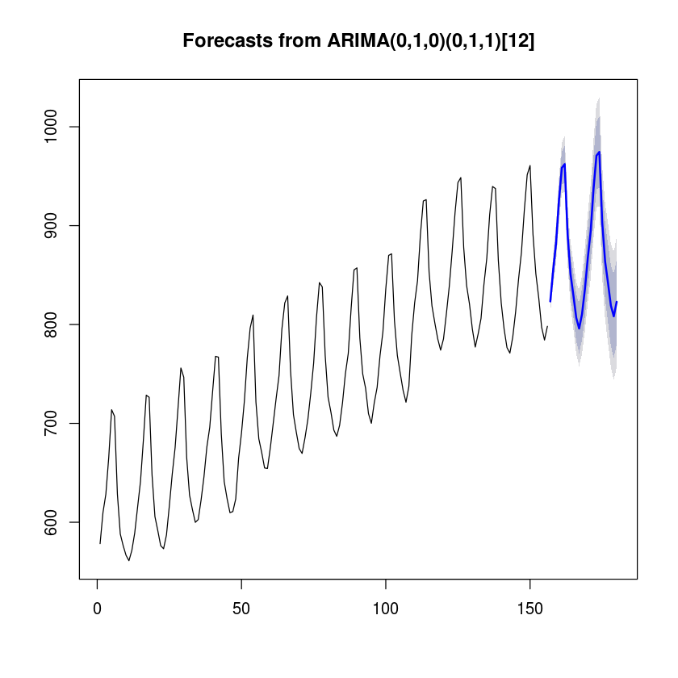
The forecast is shown alongside the 95% confidence intervals.